Wyklad 7: Analiza danych rastrowych w QGIS i Python#
Programowanie w GIS — Kurs dla studentow I stopnia#
Tematy: Dane rastrowe | PyQGIS | rasterio | NumPy | Kalkulator rastrowy | Statystyki strefowe
Wymagania wstepne: Wyklad 2 — PyQGIS, podstawy NumPy
Czym rozni sie raster od wektora — przypomnienie#
Dane wektorowe opisuja swiat jako obiekty (punkty, linie, poligony). Dane rastrowe opisuja swiat jako siatke komorek (pikseli), gdzie kazda komorka ma jedna lub wiecej wartosci liczbowych.
Wektor: Raster:
+---+---+---+---+
/\ |231|245|198|187|
/ \ +---+---+---+---+
/ las\ |220|234|201|192|
/______\ +---+---+---+---+
|198|210|245|230|
Jeden obiekt = jeden polygon +---+---+---+---+
Jeden piksel = jedna wartosc
Kiedy uzywac danych rastrowych#
Zjawisko |
Dlaczego raster |
|---|---|
Numeryczny Model Terenu (NMT) |
Wysokosc jest ciagla — kazdemu punktowi odpowiada jedna wartosc |
Zobrazowanie satelitarne |
Kamera rejestruje swiato w pikselach |
Temperatura powietrza |
Zjawisko cigle, interpolowane na siatke |
Pokrycie terenu |
Klasyfikacja na regularnej siatce |
Opad atmosferyczny |
Mierzone w punktach, interpolowane jako raster |
Jak korzystac z tego notatnika#
Komorki # [QGIS] uruchamiaj w Konsoli Pythona QGIS.
Komorki # [JUPYTER] uruchamiaj tutaj — wymagaja rasterio, numpy, matplotlib.
pip install rasterio numpy matplotlib
1. Model danych rastrowych#
1.1 Podstawowe pojecia#
Piksel — podstawowa jednostka rastra. Kazdy piksel:
zajmuje okreslony obszar na ziemi (rozdzielczosc przestrzenna),
ma jedna lub wiecej wartosci numerycznych (pasma),
jest prostokątem (najczesciej kwadratem).
Rozdzielczosc przestrzenna — rozmiar piksela na ziemi. Raster 10 m ma piksele pokrywajace 10 m × 10 m. Im mniejszy piksel, tym wiecej szczegolów — i wiekszy plik.
Satelita |
Rozdzielczosc |
Zastosowanie |
|---|---|---|
Sentinel-2 |
10 m / 20 m / 60 m |
Monitoring, rolnictwo |
Landsat 8/9 |
30 m |
Dlugoletni monitoring |
SPOT-7 |
1.5 m |
Szczegolowe mapy |
Drone ortofoto |
5–20 cm |
Precyzja rolnicza, budowlana |
Pasmo (band) — jedna warstwa wartosci. Zobrazowanie RGB ma 3 pasma. Satelita Sentinel-2 ma 13 pasm (rozny zakres spektralny).
1.2 Wspolrzedne rastra — geotransformacja#
Dane wektorowe określają swoje położenie na Ziemi, bo każdy punkt ma zapisane współrzędne geograficzne. Raster działa inaczej — to zwykła siatka liczb, jak arkusz kalkulacyjny.
Żeby raster miał sens przestrzenny, potrzebuje georeferencji — informacji łączącej numery wierszy i kolumn siatki z rzeczywistymi współrzędnymi na Ziemi.
Geotransformacja to ogólny standard GIS, a nie cecha konkretnego oprogramowania. Stosuje go QGIS, rasterio, GDAL, ArcGIS i każde inne narzędzie GIS pracujące z rastrami. Zapis geotransformacji jest częścią formatu pliku — np. w GeoTIFF jest zapisana w nagłówku pliku, dlatego plik “wie” gdzie leży niezależnie od tego jakim programem go otworzysz.
Geotransformacja to krotka sześciu liczb (standard GDAL):
(x_lewy_gory, rozdzielczosc_x, obrot_x, y_gory, obrot_y, -rozdzielczosc_y)
Dla zdecydowanej większości rastrów obrot_x = obrot_y = 0 — raster jest wyrównany do osi współrzędnych i nie jest obrócony. Dlatego w praktyce liczy się tylko cztery wartości:
x_lewy_gory — współrzędna X lewego górnego rogu rastra
y_gory — współrzędna Y lewego górnego rogu rastra
rozdzielczosc_x — szerokość jednego piksela w jednostkach CRS
-rozdzielczosc_y — wysokość piksela, ujemna bo oś Y rośnie w górę a wiersze są numerowane od góry w dół
Każde narzędzie GIS odczytuje tę samą geotransformację z pliku, tylko pokazuje ją trochę inaczej:
# GDAL / rasterio — krotka 6 liczb
src.transform
# Affine(0.1, 0.0, 14.1,
# 0.0, -0.1, 55.0)
# PyQGIS — osobne metody
layer.rasterUnitsPerPixelX() # rozdzielczosc_x
layer.rasterUnitsPerPixelY() # rozdzielczosc_y (zwraca wartosc dodatnia)
layer.extent().xMinimum() # x_lewy_gory
layer.extent().yMaximum() # y_gory
To są dwa różne interfejsy do tej samej informacji zapisanej w pliku.
1.3 Wartosc NoData#
Nie kazdy piksel ma sensowna wartosc — poza obszarem pomiaru
lub tam gdzie dane sa niedostepne, uzywana jest wartosc NoData.
Typowe wartosci: -9999, -32768, 255, nan.
Kluczowe: NoData nie jest zerem. Nalezy ja traktowac jak brak danych, nie jak wartosc. Wiele bledow analitycznych pochodzi z ignorowania NoData.
1.4 Popularne formaty rastrowe#
Format |
Rozszerzenie |
Uwagi |
|---|---|---|
GeoTIFF |
|
Standard — geotransformacja wbudowana w plik |
Cloud Optimized GeoTIFF |
|
Zoptymalizowany do streamingu z serwera |
NetCDF |
|
Dane naukowe, czas jako wymiar |
HDF5 |
|
Duze dane satelitarne |
ASCII Grid |
|
Prosty format tekstowy, przestarzaly |
JPEG2000 |
|
Kompresja stratna, Sentinel-2 |
Na tym wykladzie uzywamy GeoTIFF — jest jednym z najpopularniejszych formatów.
2. Wczytywanie rastra w PyQGIS — QgsRasterLayer#
2.1 Klasa QgsRasterLayer#
QgsRasterLayer to odpowiednik QgsVectorLayer dla danych rastrowych.
Dziedziczy po QgsMapLayer i dodaje metody specyficzne dla rastrow.
2.2 Wczytanie pliku#
# [QGIS] Wczytaj raster z pliku
from qgis.core import QgsRasterLayer, QgsProject
sciezka = 'C:/sample.tif' # zmien na swoja sciezke
raster = QgsRasterLayer(sciezka, 'NMT', 'gdal')
# ^sciezka ^nazwa ^dostawca
if raster.isValid():
print('Raster wczytany poprawnie!')
QgsProject.instance().addMapLayer(raster)
else:
print(f'Blad wczytywania: {raster.error().message()}')
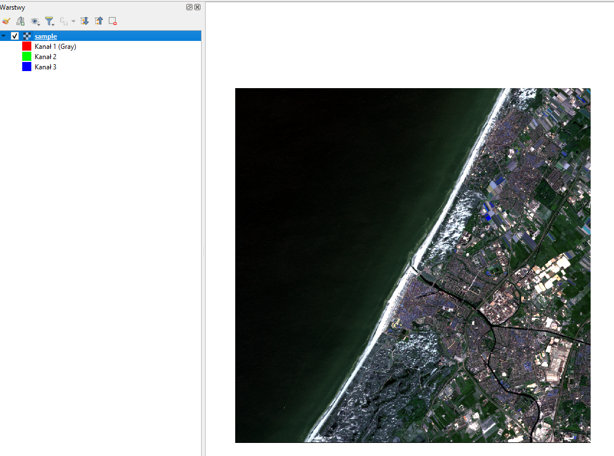
2.3 Podstawowe metadane#
# [QGIS] Metadane rastra
raster = iface.activeLayer() # zaznacz warstwe rastrowa w Panelu warstw
print(f'Nazwa : {raster.name()}')
print(f'CRS : {raster.crs().authid()}')
print(f'Liczba pasm : {raster.bandCount()}')
print(f'Szerokosc (px) : {raster.width()}')
print(f'Wysokosc (px) : {raster.height()}')
# Rozdzielczosc
print(f'Rozdzielczosc X: {raster.rasterUnitsPerPixelX():.4f}')
print(f'Rozdzielczosc Y: {raster.rasterUnitsPerPixelY():.4f}')
# Zasieg
ext = raster.extent()
print(f'xMin: {ext.xMinimum():.4f}')
print(f'xMax: {ext.xMaximum():.4f}')
print(f'yMin: {ext.yMinimum():.4f}')
print(f'yMax: {ext.yMaximum():.4f}')
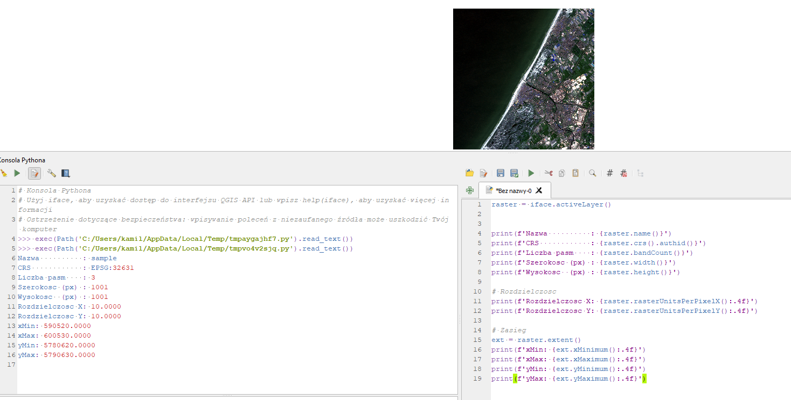
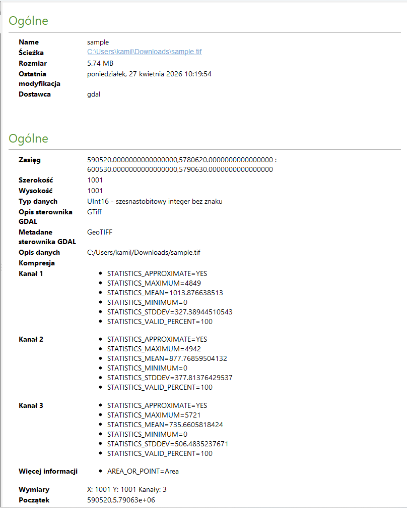
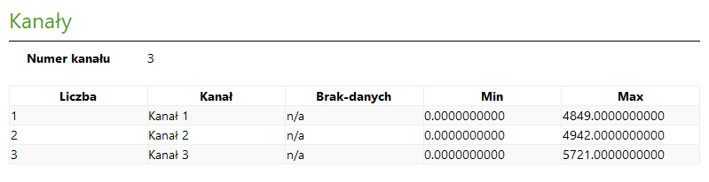
2.4 Statystyki pasma#
# [QGIS] Statystyki wartosci pikseli
from qgis.core import QgsRasterBandStats
raster = iface.activeLayer()
numer_pasma = 1 # pasma numerowane od 1
stats = raster.dataProvider().bandStatistics(
numer_pasma,
QgsRasterBandStats.All
)
print(f'Minimum : {stats.minimumValue:.2f}')
print(f'Maksimum : {stats.maximumValue:.2f}')
print(f'Srednia : {stats.mean:.2f}')
print(f'Odch.std : {stats.stdDev:.2f}')
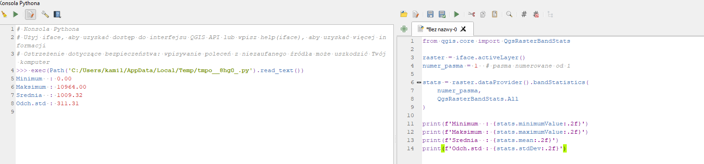
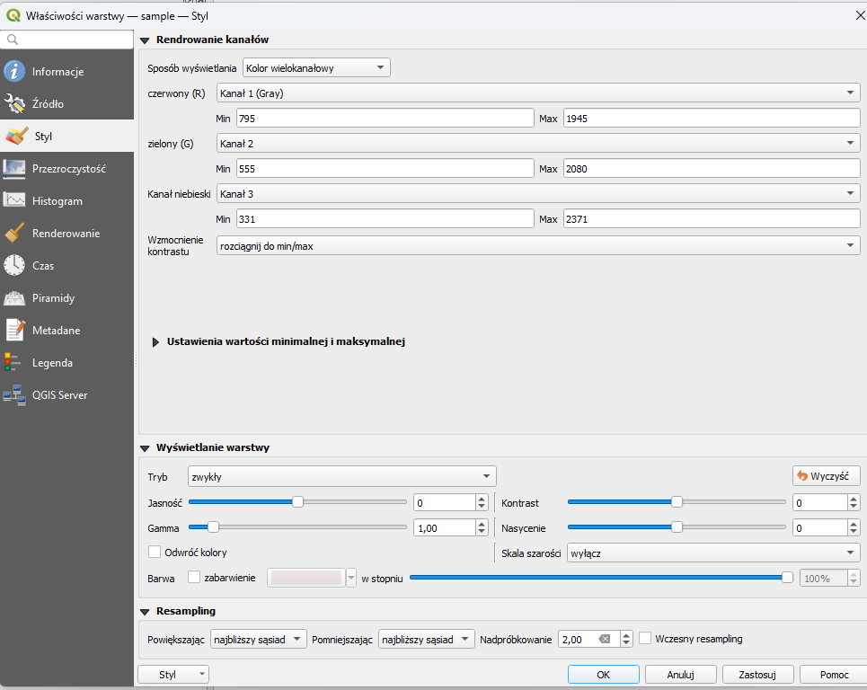
2.5 Odczyt wartosci w punkcie#
# [QGIS] Odczytaj wartosc piksela w danym punkcie
from qgis.core import QgsPointXY
raster = iface.activeLayer()
# Wspolrzedne punktu (musza byc w CRS rastra)
punkt = QgsPointXY(17.038, 51.108) # Wroclaw
wynik, ok = raster.dataProvider().sample(punkt, 1) # 1 = numer pasma
if ok:
print(f'Wartosc w punkcie: {wynik:.2f}')
else:
print('Punkt poza zasiegiem rastra lub wartosc NoData')
2.6 Informacje o kazdym pasmie#
# [QGIS] Przejdz przez wszystkie pasma
raster = iface.activeLayer()
print(f'Raster ma {raster.bandCount()} pasm:')
for i in range(1, raster.bandCount() + 1):
nazwa = raster.dataProvider().generateBandName(i)
typ = raster.dataProvider().dataType(i)
print(f' Pasmo {i}: {nazwa} (typ danych: {typ})')
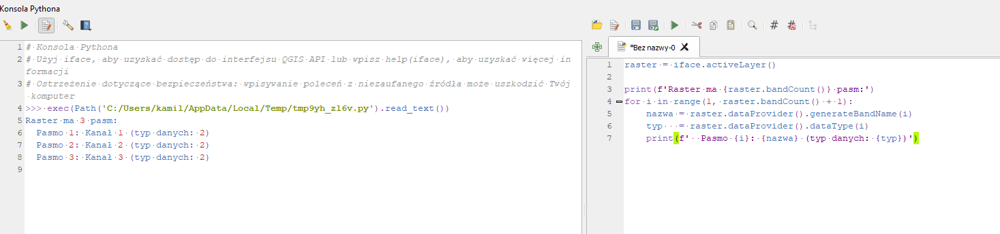
3. Wczytywanie rastra w rasterio#
3.1 Czym jest rasterio#
rasterio to biblioteka Pythona do odczytu i zapisu danych rastrowych.
Dziala niezaleznie od QGIS, na bazie biblioteki GDAL.
Zwraca dane jako tablice NumPy — mozna na nich wykonywac dowolne obliczenia.
3.2 Podstawowy odczyt#
import rasterio
import numpy as np
# Otwarcie pliku (jak open() dla zwyklych plikow)
with rasterio.open('sample.tif') as src:
# Metadane
print(src.crs) # uklad wspolrzednych
print(src.count) # liczba pasm
print(src.width) # szerokosc w pikselach
print(src.height) # wysokosc w pikselach
print(src.dtypes) # typy danych per pasmo
print(src.nodata) # wartosc NoData
print(src.transform) # geotransformacja
print(src.bounds) # zasieg (left, bottom, right, top)
# Odczyt danych jako tablica NumPy
pasmo1 = src.read(1) # jedno pasmo, shape: (height, width)
wszystkie = src.read() # wszystkie pasma, shape: (count, height, width)
print(type(pasmo1)) # numpy.ndarray
print(pasmo1.shape) # (height, width)
print(pasmo1.dtype) # int16, float32, uint8...
3.3 Maska NoData#
with rasterio.open('nmt.tif') as src:
dane = src.read(1) # surowe dane z NoData
maska = src.dataset_mask() # 0 = NoData, 255 = dane
# Zamien NoData na NaN (dla float)
dane_float = dane.astype(float)
dane_float[maska == 0] = np.nan
# Obliczenia tylko na poprawnych pikselach
print(f'Srednia (z NaN): {np.nanmean(dane_float):.2f}')
print(f'Pikselei NoData: {np.sum(maska == 0)}')
3.4 Przeliczanie wspolrzednych#
from rasterio.transform import rowcol, xy
with rasterio.open('nmt.tif') as src:
# Wspolrzedne geograficzne -> numer wiersza i kolumny
row, col = rowcol(src.transform, 17.038, 51.108)
print(f'Wroclaw: wiersz={row}, kolumna={col}')
# Wartosc w tym pikselu
dane = src.read(1)
print(f'Wartosc NMT w Wroclawiu: {dane[row, col]}')
# Numer wiersza/kolumny -> wspolrzedne centrum piksela
lon, lat = xy(src.transform, row, col)
print(f'Centrum piksela: lon={lon:.4f}, lat={lat:.4f}')
import rasterio
import numpy as np
# Otwarcie pliku (jak open() dla zwyklych plikow)
with rasterio.open('sample.tif') as src:
# Metadane
print(src.crs) # uklad wspolrzednych
print(src.count) # liczba pasm
print(src.width) # szerokosc w pikselach
print(src.height) # wysokosc w pikselach
print(src.dtypes) # typy danych per pasmo
print(src.nodata) # wartosc NoData
print(src.transform) # geotransformacja
print(src.bounds) # zasieg (left, bottom, right, top)
# Odczyt danych jako tablica NumPy
pasmo1 = src.read(1) # jedno pasmo, shape: (height, width)
wszystkie = src.read() # wszystkie pasma, shape: (count, height, width)
print(type(pasmo1)) # numpy.ndarray
print(pasmo1.shape) # (height, width)
print(pasmo1.dtype) # int16, float32, uint8...
PROJCS["WGS 84 / UTM zone 31N",GEOGCS["WGS 84",DATUM["World Geodetic System 1984",SPHEROID["WGS 84",6378137,298.257223563]],PRIMEM["Greenwich",0],UNIT["degree",0.0174532925199433,AUTHORITY["EPSG","9122"]]],PROJECTION["Transverse_Mercator"],PARAMETER["latitude_of_origin",0],PARAMETER["central_meridian",3],PARAMETER["scale_factor",0.9996],PARAMETER["false_easting",500000],PARAMETER["false_northing",0],UNIT["metre",1,AUTHORITY["EPSG","9001"]],AXIS["Easting",EAST],AXIS["Northing",NORTH]]
3
1001
1001
('uint16', 'uint16', 'uint16')
None
| 10.00, 0.00, 590520.00|
| 0.00,-10.00, 5790630.00|
| 0.00, 0.00, 1.00|
BoundingBox(left=590520.0, bottom=5780620.0, right=600530.0, top=5790630.0)
<class 'numpy.ndarray'>
(1001, 1001)
uint16
import matplotlib.pyplot as plt
with rasterio.open('sample.tif') as src:
plt.figure(figsize=(12,12))
plt.imshow(src.read(1))
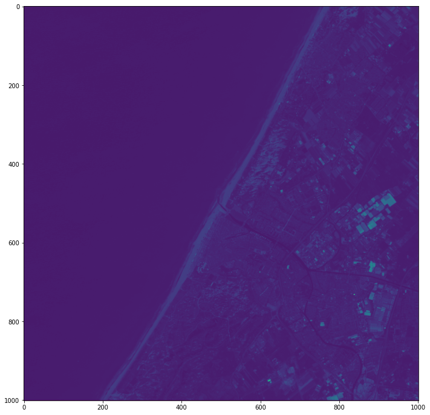
with rasterio.open('sample.tif') as src:
dane = src.read(1) # surowe dane z NoData
maska = src.dataset_mask() # 0 = NoData, 255 = dane
# Zamien NoData na NaN (dla float)
dane_float = dane.astype(float)
dane_float[maska == 0] = np.nan
# Obliczenia tylko na poprawnych pikselach
print(f'Srednia (z NaN): {np.nanmean(dane_float):.2f}')
print(f'Pikselei NoData: {np.sum(maska == 0)}')
Srednia (z NaN): 1009.32
Pikselei NoData: 0
from rasterio.transform import rowcol, xy
with rasterio.open('sample.tif') as src:
# Wspolrzedne geograficzne -> numer wiersza i kolumny
row, col = rowcol(src.transform, 597561, 5785199)
print(f'wiersz={row}, kolumna={col}')
# Wartosc w tym pikselu
dane = src.read(1)
print(f'Wartosc rastra: {dane[row, col]}')
# Numer wiersza/kolumny -> wspolrzedne centrum piksela
lon, lat = xy(src.transform, row, col)
print(f'Centrum piksela: lon={lon:.4f}, lat={lat:.4f}')
wiersz=543, kolumna=704
Wartosc rastra: 1197
Centrum piksela: lon=597565.0000, lat=5785195.0000
4. Operacje na pasmach i pikselach — NumPy#
4.1 Dlaczego NumPy#
Raster wczytany przez rasterio to tablica NumPy. NumPy pozwala wykonywac operacje na milionach pikseli naraz, co jest znacznie szybsze niz petla po kazdym pikselu (algebra liniowa).
Przyklad: raster 1000×1000 pikseli ma 1 000 000 komorek. Petla Python: kilka sekund. Operacja NumPy: ulamek sekundy.
4.2 Podstawowe operacje arytmetyczne#
import numpy as np
# dane to tablica NumPy shape (height, width)
# Kazda operacja dziala na kazdym pikselu jednoczesnie
# Przeliczenie metrow na stopy (jeśli to na przykład NMT)
dane_stopy = dane * 3.28084
# Normalizacja do zakresu 0-1
dane_norm = (dane - dane.min()) / (dane.max() - dane.min())
# Dodanie stalej do kazdego piksela
dane_przesuniete = dane + 100
# Pierwiastek kwadratowy z kazdego piksela
dane_sqrt = np.sqrt(np.maximum(dane, 0)) # maximum by uniknac ujemnych
4.3 Operacje miedzy pasmami — przykład NDVI#
NDVI (Normalized Difference Vegetation Index) to klasyczny wskaznik zdrowia roslinnosci obliczany z danych wielospektralnych:
NDVI = (NIR - RED) / (NIR + RED)
gdzie NIR = pasmo bliskiej podczerwieni, RED = pasmo czerwone. NDVI przyjmuje wartosci od -1 do 1:
Wartosc |
Interpretacja |
|---|---|
> 0.6 |
Gesta roslinnosc (las) |
0.2 – 0.6 |
Roslinnosc rozrzedzona (trawy, uprawy) |
0.0 – 0.2 |
Slaba roslinnosc lub gleba |
< 0.0 |
Woda, snieg, skaly |
with rasterio.open('sentinel2.tif') as src:
# Sentinel-2: pasmo 4 = RED, pasmo 8 = NIR
red = src.read(4).astype(float)
nir = src.read(8).astype(float)
# Unikamy dzielenia przez zero
mianownik = nir + red
ndvi = np.where(
mianownik != 0,
(nir - red) / mianownik,
np.nan
)
print(f'NDVI min: {np.nanmin(ndvi):.3f}')
print(f'NDVI max: {np.nanmax(ndvi):.3f}')
print(f'NDVI mean: {np.nanmean(ndvi):.3f}')
4.4 Filtrowanie pikseli — maski logiczne#
# Znajdz piksele wyzsze niz 500 m
maska_wysokie = dane > 500
print(f'Pikseli > 500m: {maska_wysokie.sum()}')
# Oblicz srednia tylko dla wysokich terenow
srednia_wysokie = dane[maska_wysokie].mean()
print(f'Srednia wysokosc terenow > 500m: {srednia_wysokie:.1f}')
# Pokoloruj piksele NoData na zero
dane_clean = dane.copy()
dane_clean[dane == -9999] = 0
# Znajdz piksele w zakresie 200-500 m
niziny = (dane >= 0) & (dane <= 200)
print(f'Procent nizin: {niziny.mean() * 100:.1f}%')
import matplotlib.pyplot as plt
with rasterio.open('sample.tif') as src:
# tylko przykład, to nie NDVI
red = src.read(1).astype(float)
nir = src.read(3).astype(float)
# Unikamy dzielenia przez zero
mianownik = nir + red
ndvi = np.where(
mianownik != 0,
(nir - red) / mianownik,
np.nan
)
print(f'NDVI min: {np.nanmin(ndvi):.3f}')
print(f'NDVI max: {np.nanmax(ndvi):.3f}')
print(f'NDVI mean: {np.nanmean(ndvi):.3f}')
plt.figure(figsize=(12,12))
pyplot.imshow(ndvi)
pyplot.show()
C:\Users\kamil\AppData\Local\Temp\ipykernel_29880\1211238594.py:11: RuntimeWarning: invalid value encountered in divide
(nir - red) / mianownik,
NDVI min: -0.674
NDVI max: 0.471
NDVI mean: -0.217
---------------------------------------------------------------------------
NameError Traceback (most recent call last)
Input In [5], in <cell line: 20>()
17 print(f'NDVI mean: {np.nanmean(ndvi):.3f}')
19 plt.figure(figsize=(12,12))
---> 20 pyplot.imshow(ndvi)
21 pyplot.show()
NameError: name 'pyplot' is not defined
<Figure size 864x864 with 0 Axes>
Jak wykonac te same operacje w QGIS#
Kalkulator rastrowy — interfejs graficzny#
Wszystkie operacje arytmetyczne na pasmach mozna wykonac przez:
Raster -> Kalkulator rastrowy
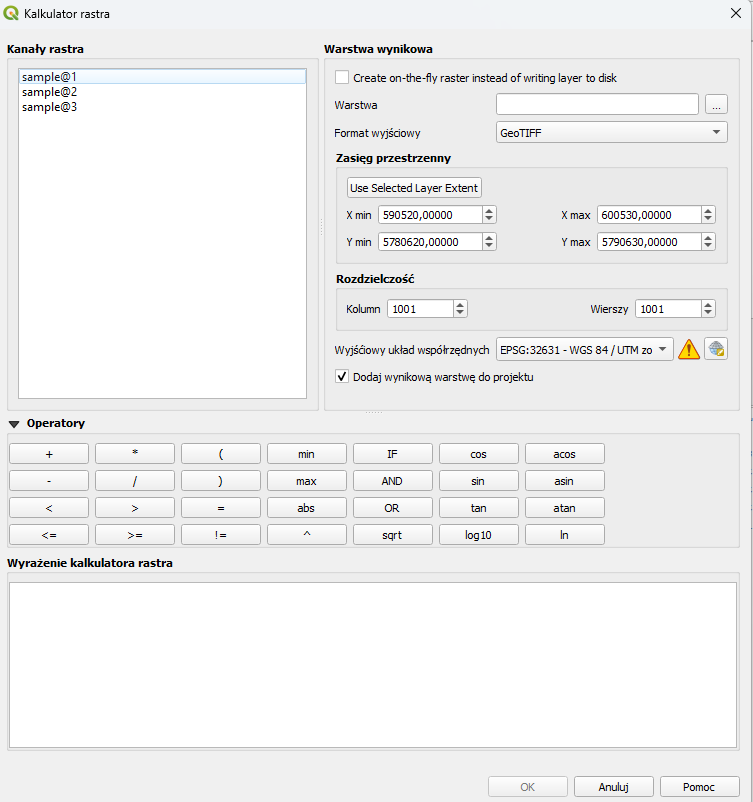
Skladnia nazwy pasma w kalkulatorze:"nazwa_warstwy@numer_pasma"
Nazwy dostepnych warstw i pasm widac w panelu po lewej stronie — mozna je klikac zamiast wpisywac recznie.
NDVI:
("sentinel2@4" - "sentinel2@3") / ("sentinel2@4" + "sentinel2@3")
Maska logiczna — piksele w zakresie 200–500 m:
("nmt@1" >= 200) AND ("nmt@1" < 500)
Wynik: raster z wartosciami 0 (falsz) i 1 (prawda).
Przeliczenie metrow na stopy:
"nmt@1" * 3.28084
Normalizacja 0–1 (gdy znasz min i max z wlasciwosci warstwy):
("nmt@1" - 80) / (280 - 80)
Statystyki pasma — przez wlasciwosci warstwy#
Kliknij dwukrotnie warstwe rastrowa w Panelu warstw
Zakladka Histogram -> kliknij
Oblicz histogramZakladka Informacje -> sekcja
Statystyki pasma
Lub przez Processing:
Przetwarzanie -> Skrzynka narzedzi -> QGIS -> Statystyki rastra
Kalkulator ratrowy - PyQGIS#
W PyQGIS wykonujemy te operacje za pomocą processingu.
UWAGA: To pierwszy raz kiedy processing pojawia się na wykładach. Może też być wykorzystywany do przetwarzania innych danych, w tym wektorowych. Tutaj spojrzymy na dane rastrowe.
Wszelkie funkcje processing uruchamiamy poleceniem
processing.run()
Każdy processing ma swoje konkretne parametry. Przykładowo kalkulator rastra wywołujemy
processing.run('qgis:rastercalculator', {parametry})
Przykładowo
raster = iface.activeLayer()
nazwa = raster.name()
ndvi = processing.run('qgis:rastercalculator', {
'EXPRESSION': f'("{nazwa}@1" - "{nazwa}@3") / ("{nazwa}@1" + "{nazwa}@3")',
'LAYERS' : [raster],
'CELLSIZE' : 0,
'EXTENT' : None,
'CRS' : raster.crs(),
'OUTPUT' : 'TEMPORARY_OUTPUT'
})
ndvi_path = ndvi['OUTPUT']
ndvi_layer = QgsRasterLayer(ndvi_path, 'NDVI')
if ndvi_layer.isValid():
QgsProject.instance().addMapLayer(ndvi_layer)
print('NDVI obliczony i dodany do projektu.')
else:
print('Błąd tworzenia warstwy NDVI.')
Inne przykłady:
# --- Maska logiczna: piksele powyzej 500m ---
# (zakladamy ze pasmo 1 to NMT w metrach)
maska = processing.run('qgis:rastercalculator', {
'EXPRESSION': f'"{nazwa}@1" > 500',
'LAYERS' : [raster],
'CELLSIZE' : 0,
'EXTENT' : None,
'CRS' : raster.crs(),
'OUTPUT' : 'TEMPORARY_OUTPUT'
})
maska_layer = maska['OUTPUT']
maska_layer.setName('Maska_powyzej_500m')
QgsProject.instance().addMapLayer(maska_layer)
print('Maska logiczna dodana do projektu.')
# --- Statystyki pasma przez PyQGIS ---
from qgis.core import QgsRasterBandStats
print(f'\nStatystyki pasm warstwy: {raster.name()}')
print(f'{"Pasmo":<8} {"Min":>10} {"Max":>10} {"Srednia":>10} {"Std":>10}')
print('-' * 52)
for i in range(1, raster.bandCount() + 1):
stats = raster.dataProvider().bandStatistics(
i, QgsRasterBandStats.All
)
print(f'{i:<8} {stats.minimumValue:>10.3f} {stats.maximumValue:>10.3f}'
f' {stats.mean:>10.3f} {stats.stdDev:>10.3f}')
# --- Przeliczenie metrow na stopy (pasmo 1) ---
stopy = processing.run('qgis:rastercalculator', {
'EXPRESSION': f'"{nazwa}@1" * 3.28084',
'LAYERS' : [raster],
'CELLSIZE' : 0,
'EXTENT' : None,
'CRS' : raster.crs(),
'OUTPUT' : 'TEMPORARY_OUTPUT'
})
stopy_layer = stopy['OUTPUT']
stopy_layer.setName('NMT_stopy')
QgsProject.instance().addMapLayer(stopy_layer)
print('\nPasmo 1 przeliczone na stopy i dodane do projektu.')
iface.mapCanvas().refresh()
5. Przycinanie rastra do obszaru — clip by mask#
5.1 Po co przycinamy#
Dane rastrowe czesto pokrywaja wiekszy obszar niz potrzebujemy. Satelitarne sceny pokrywaja setki km². Jezeli interesuje nas tylko jeden powiat, przycinamy raster do jego granicy.
Efekty przycinania:
mniejszy plik — szybszy odczyt i obliczenia,
wyniki analizy ograniczone do obszaru zainteresowania,
piksele poza obszarem maskowane jako NoData.
5.2 Przycinanie w PyQGIS przez Processing#
# [QGIS] Przytnij raster do granicy warstwy wektorowej
import processing
raster = QgsProject.instance().mapLayersByName('NMT')[0]
maska = QgsProject.instance().mapLayersByName('granica_obszaru')[0]
wynik = processing.run('gdal:cliprasterbymasklayer', {
'INPUT' : raster,
'MASK' : maska,
'NODATA' : -9999,
'CROP_TO_CUTLINE': True, # przytnij do bounding box maski
'KEEP_RESOLUTION': True, # zachowaj oryginalna rozdzielczosc
'OUTPUT' : 'TEMPORARY_OUTPUT'
})
raster_przyciety_sciezka = wynik['OUTPUT']
5.3 Przycinanie przez prostokat (bbox)#
# [QGIS] Szybsze przycinanie — przez prostokat
import processing
raster = QgsProject.instance().mapLayersByName('NMT')[0]
wynik = processing.run('gdal:cliprasterbyextent', {
'INPUT' : raster,
'PROJWIN': '16.8,17.3,50.9,51.3', # xmin,xmax,ymin,ymax
'NODATA' : -9999,
'OUTPUT' : 'TEMPORARY_OUTPUT'
})
5.4 Przycinanie w rasterio#
Pryzcięcie indeksami#
import numpy as np
import matplotlib.pyplot as plt
import rasterio
from rasterio.windows import Window
r0, r1 = 20, 900
c0, c1 = 40, 700
with rasterio.open("sample.tif") as src:
window = Window(c0, r0, c1-c0, r1-r0)
data = src.read([1, 2, 3], window=window)
rgb = np.moveaxis(data, 0, -1)
img = rgb.astype(float)
p2, p98 = np.percentile(img, (2, 98))
img = np.clip(img, p2, p98)
img = (img - p2) / (p98 - p2)
plt.imshow(img)
plt.axis("off")
plt.show()
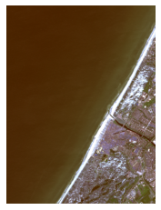
Przycięcie shapefile’m#
import rasterio
import rasterio.mask
import geopandas as gpd
gdf = gpd.read_file("wektor_przycięcia.shp")
with rasterio.open("sample.tif") as src:
out_image, out_transform = rasterio.mask.mask(
src,
gdf.geometry,
crop=True
)
out_meta = src.meta.copy()
out_meta.update({
"height": out_image.shape[1],
"width": out_image.shape[2],
"transform": out_transform
})
with rasterio.open("sample_clip.tif", "w", **out_meta) as dest:
dest.write(out_image)
img = np.moveaxis(out_image[:3], 0, -1)
# normalizacja do 0–1, żeby dobrze się wyświetlało
img = img.astype(float)
p2, p98 = np.percentile(img, (2, 98))
img = np.clip(img, p2, p98)
img = (img - p2) / (p98 - p2)
plt.figure(figsize=(12,6))
plt.imshow(img)
plt.show()
C:\Users\kamil\AppData\Roaming\Python\Python39\site-packages\geopandas\array.py:334: UserWarning: Cannot set the CRS, falling back to None. The CRS support requires the 'pyproj' package, but it is not installed or does not import correctly. The functions depending on CRS will raise an error or may produce unexpected results.
self.crs = crs
C:\Users\kamil\AppData\Roaming\Python\Python39\site-packages\geopandas\geodataframe.py:409: UserWarning: Cannot set the CRS, falling back to None. The CRS support requires the 'pyproj' package, but it is not installed or does not import correctly. The functions depending on CRS will raise an error or may produce unexpected results.
level.crs = crs
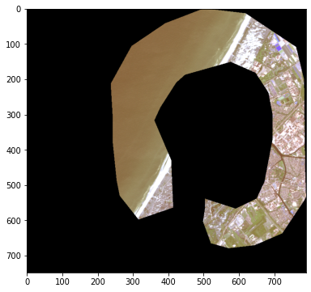
6. Reklasyfikacja#
6.1 Czym jest reklasyfikacja#
Reklasyfikacja (ang. reclassify) zamienia wartosci ciagłe na kategorie dyskretne. Przyklad:
Wartosc NMT -> Klasa
0 – 200 m 1 (niziny)
200 – 500 m 2 (wyzyny)
500 – 1500 m 3 (gory niskie)
> 1500 m 4 (gory wysokie)
6.2 Reklasyfikacja w PyQGIS przez Processing#
# [QGIS] Reklasyfikuj NMT na klasy wysokosciowe
import processing
raster = iface.activeLayer()
# Tabela reklasyfikacji: [[min, max, nowa_wartosc], ...]
tabela = [
[0, 200, 1], # niziny
[200, 500, 2], # wyzyny
[500, 1300, 3], # gory niskie
[1300, 9999, 4], # gory wysokie
]
wynik = processing.run('native:reclassifybytable', {
'INPUT_RASTER' : raster,
'RASTER_BAND' : 1,
'TABLE' : [v for row in tabela for v in row],
'NO_DATA' : -9999,
'RANGE_BOUNDARIES': 0, # 0 = min <= x < max
'NODATA_FOR_MISSING': True,
'OUTPUT' : 'TEMPORARY_OUTPUT'
})
reklasy = wynik['OUTPUT']
reklasy_layer = QgsRasterLayer(reklasy, 'reclassfied')
QgsProject.instance().addMapLayer(reklasy_layer)
print('Reklasyfikacja zakonczona.')
6.3 Reklasyfikacja przez NumPy (rasterio)#
import numpy as np
# dane = tablica NumPy z wartosciami NMT
wynik = np.full_like(dane, -9999, dtype=np.int8) # wypelnij NoData
# Przypisz klasy przez maski logiczne
wynik[(dane >= 0) & (dane < 200)] = 1
wynik[(dane >= 200) & (dane < 500)] = 2
wynik[(dane >= 500) & (dane < 1500)] = 3
wynik[dane >= 1500] = 4
print(f'Klasa 1 (niziny) : {(wynik==1).sum()} px')
print(f'Klasa 2 (wyzyny) : {(wynik==2).sum()} px')
print(f'Klasa 3 (gory niskie): {(wynik==3).sum()} px')
print(f'Klasa 4 (gory wys.) : {(wynik==4).sum()} px')
6.4 Kalkulator rastrowy w PyQGIS#
Kalkulator rastrowy pozwala pisac wyrazenia matematyczne operujace na pasmach rastra.
# [QGIS] Oblicz nachylenie terenu przez Processing
import processing
nmt = QgsProject.instance().mapLayersByName('NMT')[0]
# Nachylenie terenu
nachylenie = processing.run('gdal:slope', {
'INPUT' : nmt,
'BAND' : 1,
'SCALE' : 1,
'AS_PERCENT' : False, # w stopniach
'COMPUTE_EDGES' : True,
'OUTPUT' : 'TEMPORARY_OUTPUT'
})
# Ekspozycja terenu (aspect)
ekspozycja = processing.run('gdal:aspect', {
'INPUT' : nmt,
'BAND' : 1,
'OUTPUT' : 'TEMPORARY_OUTPUT'
})
# Cieniowanie rzezby (hillshade)
hillshade = processing.run('gdal:hillshade', {
'INPUT' : nmt,
'BAND' : 1,
'Z_FACTOR' : 2, # wyolbrzmienie pionowe
'SCALE' : 1,
'AZIMUTH' : 315, # kierunek swiatla
'ALTITUDE' : 45, # kat swiatla
'OUTPUT' : 'TEMPORARY_OUTPUT'
})
for wynik, nazwa in [
(nachylenie, 'Nachylenie'),
(ekspozycja, 'Ekspozycja'),
(hillshade, 'Cieniowanie')
]:
w = wynik['OUTPUT']
w.setName(nazwa)
QgsProject.instance().addMapLayer(w)
print('Wszystkie pochodne NMT dodane do projektu.')
nmt = rasterio.open('SRTM.tif')
data = nmt.read(1)
plt.figure(figsize=(10,6))
plt.imshow(data, cmap='terrain')
plt.colorbar(label="Elevation [m]")
plt.title("NMT / DEM")
plt.axis("off")
plt.show()
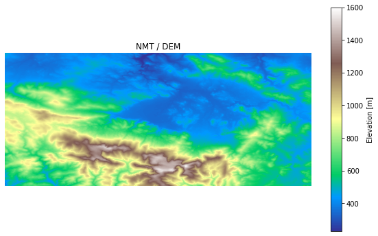
import numpy as np
import matplotlib.pyplot as plt
import matplotlib.colors as mcolors
nmt = data
# Reklasyfikacja
klasy = np.zeros_like(nmt, dtype=np.int8)
klasy[(nmt >= 0) & (nmt < 200)] = 1 # niziny
klasy[(nmt >= 200) & (nmt < 500)] = 2 # wyzyny
klasy[(nmt >= 500) & (nmt < 1000)] = 3 # gory niskie
klasy[nmt >= 1000] = 4 # gory wysokie
# Wizualizacja
fig, axes = plt.subplots(2, 1, figsize=(7, 10))
im0 = axes[0].imshow(nmt, cmap='terrain', aspect='auto')
plt.colorbar(im0, ax=axes[0], label='m n.p.m.')
axes[0].set_title('NMT — wartosci ciagłe')
cmap_klasy = mcolors.ListedColormap(['#4FC3F7','#81C784','#A5D6A7','#D7CCC8'])
im1 = axes[1].imshow(klasy, cmap=cmap_klasy, aspect='auto', vmin=0.5, vmax=4.5)
cbar = plt.colorbar(im1, ax=axes[1], ticks=[1,2,3,4])
cbar.ax.set_yticklabels(['Niziny', 'Wyzyny', 'Gory niskie', 'Gory wysokie'])
axes[1].set_title('Reklasyfikacja — 4 klasy')
Text(0.5, 1.0, 'Reklasyfikacja — 4 klasy')
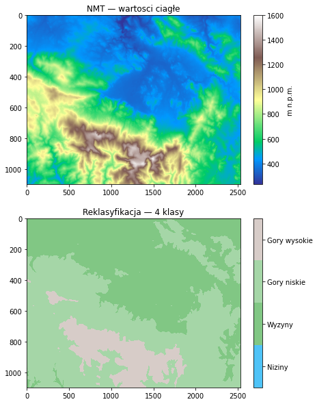
# Nachylenie (gradient)
gy, gx = np.gradient(nmt)
nachylenie = np.sqrt(gx**2 + gy**2)
# Wizualizacja
fig, axes = plt.subplots(2, 1, figsize=(7, 10))
im0 = axes[0].imshow(nmt, cmap='terrain', aspect='auto')
plt.colorbar(im0, ax=axes[0], label='m n.p.m.')
axes[0].set_title('NMT — wartosci ciagłe')
im2 = axes[1].imshow(nachylenie, cmap='Reds', aspect='auto')
plt.colorbar(im2, ax=axes[1], label='Gradient')
axes[1].set_title('Nachylenie terenu (gradient NMT)')
Text(0.5, 1.0, 'Nachylenie terenu (gradient NMT)')
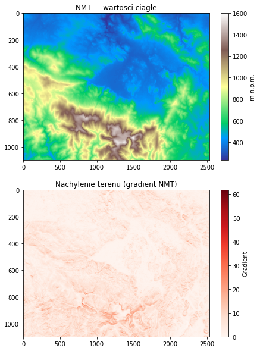
# Hillshade
az_rad = np.radians(315)
alt_rad = np.radians(45)
hillshade = (np.cos(alt_rad) * np.cos(np.arctan(nachylenie))
+ np.sin(alt_rad) * np.sin(np.arctan(nachylenie))
* np.cos(az_rad - np.arctan2(-gx, gy)))
hillshade = np.clip(hillshade * 255, 0, 255)
fig, axes = plt.subplots(2, 1, figsize=(7, 10))
im0 = axes[0].imshow(nmt, cmap='terrain', aspect='auto')
plt.colorbar(im0, ax=axes[0], label='m n.p.m.')
axes[0].set_title('NMT — wartosci ciagłe')
im3 = axes[1].imshow(hillshade, cmap='gray', aspect='auto')
plt.colorbar(im3, ax=axes[1])
axes[1].set_title('Cieniowanie rzezby (hillshade)')
Text(0.5, 1.0, 'Cieniowanie rzezby (hillshade)')
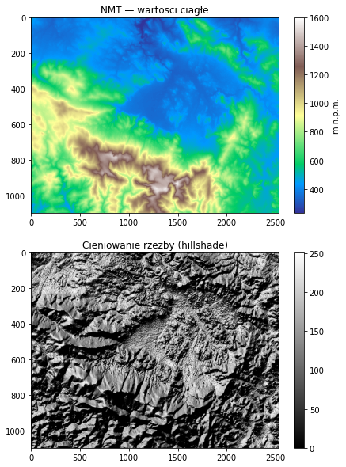
8. Eksport i wizualizacja wynikow#
8.1 Zapis rastra w rasterio#
import rasterio
with rasterio.open("SRTM.tif") as src:
data = src.read()
profile = src.profile
with rasterio.open("SRTM_copy.tif", "w", **profile) as dst:
dst.write(data)
print("Raster zapisany.")
8.2 Eksport przez PyQGIS#
# [QGIS] Zapisz raster tymczasowy do pliku
import processing
raster = iface.activeLayer()
processing.run("gdal:translate", {
'INPUT': raster,
'TARGET_CRS': None,
'NODATA': None,
'COPY_SUBDATASETS': False,
'OPTIONS': '',
'EXTRA': '',
'DATA_TYPE': 0,
'OUTPUT': 'C:/temp/output.tif'
})
print("Raster zapisany.")
LUB
from qgis.core import QgsRasterFileWriter
raster = iface.activeLayer()
pipe = raster.pipe()
writer = QgsRasterFileWriter("C:/temp/output.tif")
writer.writeRaster(
pipe,
raster.width(),
raster.height(),
raster.extent(),
raster.crs()
)
print("Raster zapisany.")
9. PyQGIS vs rasterio — kiedy co uzywac#
Zadanie |
PyQGIS |
rasterio |
|---|---|---|
Wczytanie rastra do projektu QGIS |
Tak — |
Nie |
Odczyt wartosci w punkcie |
Tak — |
Tak — przez transformacje |
Statystyki pasma |
Tak — |
Tak — przez NumPy |
Clip by mask |
Tak — |
Tak — |
Reklasyfikacja |
Tak — |
Tak — maski NumPy |
Zonal statistics |
Tak — |
Tak — petla + mask |
Obliczenia arytmetyczne (NDVI) |
Tak — kalkulator rastrowy |
Tak — NumPy (szybciej) |
Hillshade, slope, aspect |
Tak — |
Mozliwe — NumPy (trudniej) |
Praca bez QGIS (serwer, Jupyter) |
Nie |
Tak |
Integracja z data science |
Slaba |
Doskonala (pandas, sklearn) |
Wizualizacja |
QGIS Canvas |
Matplotlib (wiecej kontroli) |
Zasada#
Jezeli pracujesz wewnatrz projektu QGIS i potrzebujesz algorytmow Processing Toolbox — uzyj PyQGIS.
Jezeli robisz skomplikowane obliczenia numeryczne, pracujesz w Jupyter lub na serwerze — uzyj rasterio + NumPy.
W praktyce czesto laczymy oba: PyQGIS do wczytania i clipowania, rasterio do obliczen, PyQGIS ponownie do zapisu i wizualizacji.
10. Podsumowanie i slownik pojec#
Co omowilismy#
model danych rastrowych: piksel, pasmo, rozdzielczosc, NoData, geotransformacja,
wczytywanie rastra przez
QgsRasterLayerirasterio.open(),odczyt metadanych: CRS, liczba pasm, rozdzielczosc, zasieg, statystyki,
odczyt wartosci w punkcie przez
dataProvider().sample()irowcol(),operacje NumPy na pikselach: arytmetyka, maski logiczne, NDVI,
przycinanie do obszaru:
gdal:cliprasterbymasklayerirasterio.mask,reklasyfikacja:
native:reclassifybytablei maski NumPy,pochodne NMT: nachylenie, ekspozycja, hillshade przez Processing,
statystyki strefowe:
native:zonalstatisticsfbi petla rasterio,zapis rastra i wizualizacja w Matplotlib.
Slownik pojec#
Pojecie |
Definicja |
|---|---|
Piksel |
Podstawowa komorka rastra przechowujaca wartosc numeryczna |
Pasmo (band) |
Jedna warstwa wartosci w rastrze wielospektralnym |
Rozdzielczosc przestrzenna |
Rozmiar piksela na ziemi (np. 10 m × 10 m) |
Geotransformacja |
Szesc liczb laczacych numery wierszy/kolumn ze wspolrzednymi |
NoData |
Specjalna wartosc oznaczajaca brak danych (nie jest zerem!) |
GeoTIFF |
Format rastrowy przechowujacy geotransformacje i CRS wewnatrz pliku |
QgsRasterLayer |
Klasa PyQGIS reprezentujaca warstwe rastrowa |
rasterio |
Biblioteka Pythona do odczytu i zapisu rastrow, zwraca NumPy |
NumPy ndarray |
Wielowymiarowa tablica liczb — format danych rastrowych w Python |
NDVI |
Normalized Difference Vegetation Index — wskaznik zdrowia roslinnosci |
Clip by mask |
Przycinanie rastra do ksztaltu warstwy wektorowej |
Reklasyfikacja |
Zamiana wartosci ciaglych na kategorie dyskretne |
Hillshade |
Cieniowanie rzezby terenu — wizualizacja NMT |
Zonal statistics |
Obliczanie statystyk wartosci rastra wewnatrz stref (poligonow) |
NMT |
Numeryczny Model Terenu — raster wysokosci powierzchni gruntu |
bandStatistics() |
Metoda PyQGIS obliczajaca min, max, srednia, odch.std dla pasma |
Dane do cwiczen#
Bezplatne rastry do pobrania:
NMT Polski (ISOK): https://opendata.geoportal.gov.pl
Sentinel-2: https://scihub.copernicus.eu
SRTM 30m (NMT swiata): https://earthexplorer.usgs.gov
Landsat: https://earthexplorer.usgs.gov
Wyklad alternatywny: Analiza rastrowa — Programowanie w GIS (QGIS) — studia licencjackie.